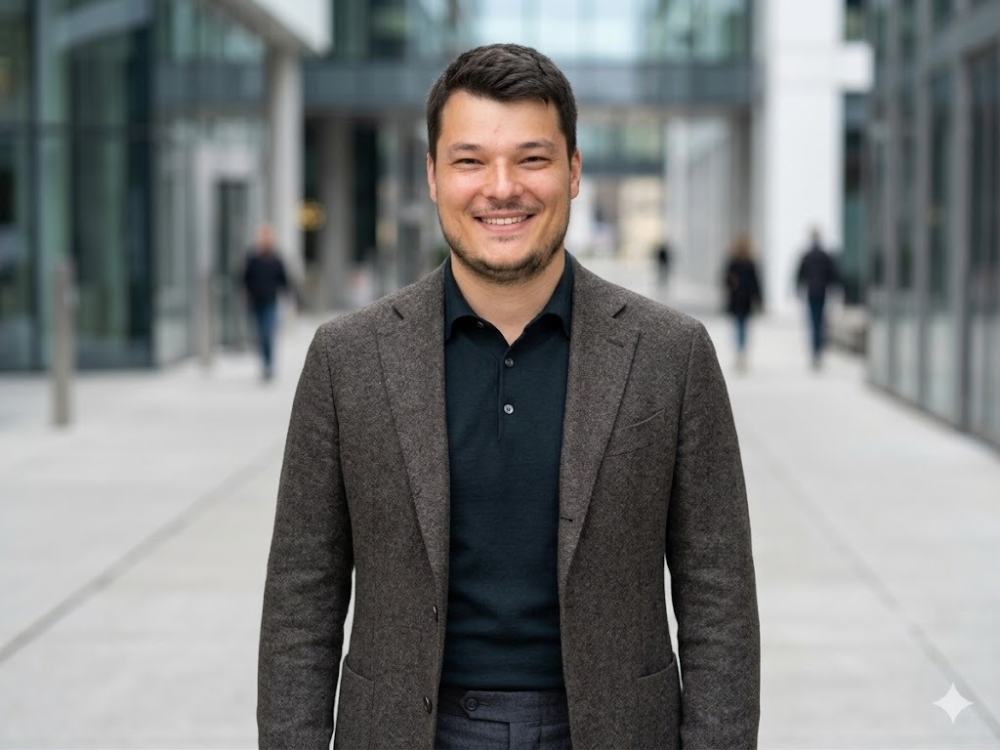

"Trasformo idee in progetti, e i progetti in eventi e laboratori
ad alto impatto culturale. Scalo l'esecuzione con l'Intelligenza Artificiale,
firmo l'autenticità con la creatività e l'esperienza sul campo"
Motivato e intraprendente, unisco competenze tecniche, sensibilità estetica e spiccate doti relazionali. Specializzato nella progettazione, pianificazione logistica e gestione allestimenti per eventi, laboratori e contesti ad alta complessità.
Mi sono occupato del monitoraggio e della redazione di proposte progettuali per bandi e laboratori dedicati. Ho coordinato le campagne di raccolta fondi, curando il piano marketing, il piano editoriale (PED) per la promozione social e le relazioni con i principali donatori, oltre a partecipare attivamente agli eventi istituzionali di fundraising.
Ho evoluto il mio percorso da agente monomandatario a broker assicurativo occupandomi della consulenza strategica, della gestione del portafoglio clienti e dell'ottimizzazione delle relazioni commerciali finalizzate alla fidelizzazione.
Mi sono occupato del monitoraggio e del reperimento fondi tramite bandi comunali, regionali, europei e privati, curandone la progettazione. Ho gestito il progetto a 360 gradi: dalla pianificazione del layout, agli aspetti logistici e al coordinamento delle squadre di allestimento, fino alla stesura di report, rendicontazione e bilanci finali.
Co-fondatore e Presidente di diverse associazioni, gestisco la realizzazione e la logistica di spettacoli, eventi e tornei di livello internazionale. Dirigo il fundraising strategico e la ricerca di sponsor per il finanziamento delle attività associative, coordinando il settore giovanile come tecnico-istruttore certificato CONI.
Ho operato come responsabile della sicurezza per locali, concerti e grandi eventi in contesti ad alto rischio. Ad oggi mi occupo del reclutamento e del coordinamento del personale, della gestione dei flussi e dell'attuazione operativa dei piani di sicurezza.
All'interno del Festival ho compiuto un percorso di crescita costante, partendo dall'accoglienza fino alla divulgazione scientifica e all'ideazione autonoma di laboratori. Dal 2012 ricopro un ruolo attivo nella logistica, lavorando a stretto contatto con il referente per il pre-allestimento di Piazza delle Feste, curando il montaggio, lo smontaggio e la gestione degli spazi. Grazie a spiccate capacità relazionali, assicuro un'efficace interazione con il pubblico e un fluido coordinamento con i diversi operatori dei laboratori, risolvendo tempestivamente ogni imprevisto sul campo.
Mi sono occupato del front-office, dell'accoglienza del pubblico e della segreteria tecnica, gestendo l'informatizzazione dell'archivio antincendio (A.I.) di UniGe. In collaborazione con la direzione e la rete associativa, ho inoltre progettato laboratori didattici e l'intera cartellonistica museale, sviluppandone contenuti e veste grafica.
Progettazione strategica, ideazione e coordinamento del piano di recupero, riqualificazione e valorizzazione del parco urbano (“Progetto Levante”). Sviluppo dell'identità del sito, della promozione e del percorso di visite guidate, con creazione della cartellonistica e del logo ufficiale adottato dal Comune.
Integrazione avanzata di sistemi e strumenti basati su Intelligenza Artificiale (AI) generativa e prompt engineering avanzato all'interno del Project Management. Focus sullo sviluppo di script e flussi di automazione (Low-Code/No-Code) per accelerare l'esecuzione dei progetti, ottimizzare la gestione dei dati e automatizzare i flussi operativi aziendali complessi.
Pianificazione, direzione e coordinamento strategico di piani editoriali digitali multicanale (PED) per la valorizzazione del brand. Gestione operativa e strategica di campagne pubblicitarie a pagamento (Social Ads su piattaforme Meta come Facebook e Instagram), con definizione del target, monitoraggio delle metriche di performance e ottimizzazione analitica del ROI.
Problem Solving & Razionalità: Affronto con metodo e razionalità problematiche diverse, trovando soluzioni in tempi adeguati sia in ambito professionale che personale.
Dinamismo & Adattabilità: Persona versatile, capace di adattarsi facilmente e con entusiasmo a gruppi di lavoro eterogenei e multiculturali.
Teamworking & Leadership: Solida esperienza nel lavoro di squadra, con attitudine a ricoprire ruoli di coordinamento e responsabilità, rispettando sempre l'autonomia e la dignità del lavoro altrui.
Comunicazione & Esposizione: Ottime capacità comunicative sia scritte che verbali, con provata efficacia e padronanza nell'esposizione di fronte al pubblico.
Resilienza & Proattività: Obiettivo costante di trasmettere energia positiva e orientamento ai risultati, senza lasciarsi scoraggiare dai problemi.
Ottima padronanza dei software grafici sia raster che vettoriali per impaginazione di tavole tecniche, creazione di loghi, manifesti, locandine, contenuti multimediali e pagine web.
Idoneità tecnica per la gestione delle emergenze e prevenzione incendi per attività ad alto rischio.
Certificato per l'esercizio dell'attività di intermediazione (Quadro E del Registro Unico Intermediari).
Diploma nazionale per l'insegnamento e la conduzione tecnica delle attività schermistiche giovanili e agonistiche.
Iscritto regolarmente all'albo prefettizio con decreto di operatore e responsabile sicurezza.
Conseguito e periodicamente rinnovato per la gestione delle emergenze di primo soccorso aziendale.
Certificazione per la sicurezza nei cantieri temporanei e mobili (ai sensi del D.Lgs 81/08).
Collaborazione con il Comune di Genova per la progettazione e la costituzione di una rete operativa territoriale integrata, ad oggi ancora attiva per attività di coesione sociale ed educazione.
Premiato al concorso internazionale di idee per la progettazione di moduli abitativi minimi autosufficienti. Progetto pubblicato con relativo premio in denaro.
Premiato con menzione speciale su scala globale per la progettazione ecocompatibile avanzata. Progetto pubblicato e presentato in sede di conferenza internazionale.